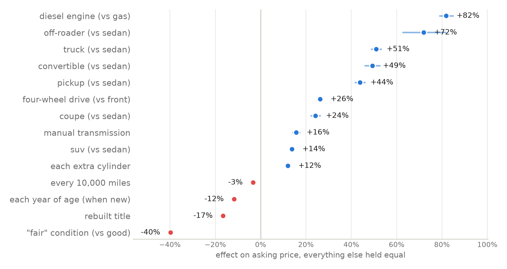

Analyzing and Predicting Used Car Prices, Take Two
what should a used car actually cost? in 2025 i built my first linear regression to answer that. this is the do-over, with everything i learned finishing my stats degree at mcmaster — same question, same craigslist data, a much more honest answer. the short story is below; the full technical write-up has every test and assumption for the curious.
the setup
the data is 426,880 craigslist car ads from spring 2021. raw craigslist is messy: the same car posted in five cities, $0 "call for price" ads, a $3.7 billion pickup truck. after removing 171,428 duplicate reposts and the junk, 72,120 real listings remain — and this time the expensive cars stay in. (the 2025 version deleted everything over $44,500 to make the data look nicer, which is exactly why it couldn't price anything interesting.) each listing has the asking price plus the basics: age, mileage, brand, body type, condition, title history, transmission, drivetrain.

notice the drop isn't a straight line — a car loses a huge slice of its value early, then the curve flattens. that shape is why the model thinks in percentages, not dollars: knocking $2,000 off matters a lot on a $6,000 civic and barely registers on a $60,000 truck. (the formal tool for this decision is called box-cox, and it agrees — details in the technical write-up.)
the model, and how good it is
the model is a linear regression: it learns how much each feature — age, mileage, brand, body type, condition, title, transmission, drivetrain — adds or subtracts from the price, all at once. i trained it on 80% of the listings and graded it on the 14,405 it had never seen. no peeking.

one more thing the 2025 version didn't have: every prediction comes with a price range, not just a number. the ranges are built to catch the true price 95% of the time — and on the unseen cars they caught it 95.3% of the time. an accuracy claim you can check is worth ten you can't.
what actually moves the price
because the model holds everything else equal, it can separate questions that raw averages mix up — like "are trucks expensive, or are truck brands expensive?" (answer: trucks. being a ram or gmc adds little once the model knows it's a truck.)

- work capability is worth the most: diesel +82%, off-roaders +72%, trucks +51%. in 2021, capability was its own currency.
- the stick-shift premium is real: +16%. commodity cars went automatic; the manuals left behind are enthusiasts' cars.
- history is expensive: a rebuilt title costs 17%, and a seller admitting "fair" condition costs 40%.
- brands matter on top of all that: an otherwise identical car is worth about twice as much wearing a porsche badge as a ford one, +55% as a lexus, +39% as a toyota. (full brand chart in the technical write-up.)
put the age effects together and you get the depreciation curve every car buyer feels: half the value gone by year five, a $6,000 car by year twelve.

the road test: six real cars, including my dream car
numbers on a chart are one thing; real cars are the fun part. i scored six: a corolla, a rav4, and the lexus is f i daydream about — once each from 2021 listings the model never fit, and once each from the 2025 autotrader ads i tested in the original project.

both corollas and both rav4s land inside their ranges. the is f escapes its range in both years — the 2021 car by just ninety-two dollars, the 2025 one by miles. and the model's excuse is actually the lesson: all it can see is "a 13-year-old 8-cylinder lexus sedan," so it prices a sensible used luxury car. it has no way to know the is f is a 500-horsepower collector's item, because that lives in the model name — a column with 9,650 different values this regression doesn't use. some cars are worth what their badge means, and no spreadsheet column carries that.
what i learned
- fix the scale, not the data. the 2025 version deleted expensive cars to tame a skewed histogram. thinking in percentages instead kept every car and cut the typical error from $3,032 to $1,835 — on identical data.
- only trust numbers earned on unseen cars. every headline here comes from listings the model never trained on, and predictions carry ranges that provably hold 95% of the time.
- know what your model can't see. the is f miss isn't a bug to hide — it's a measured boundary: brand-level features price everyday cars well and special cars poorly. pricing the badge itself is the next project.